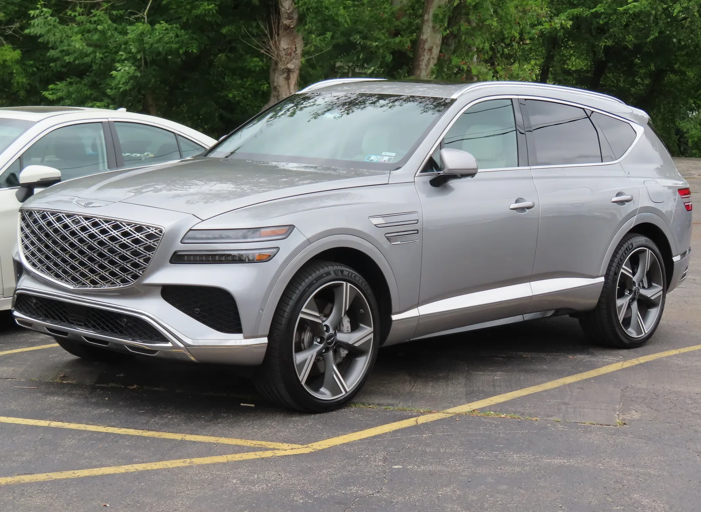
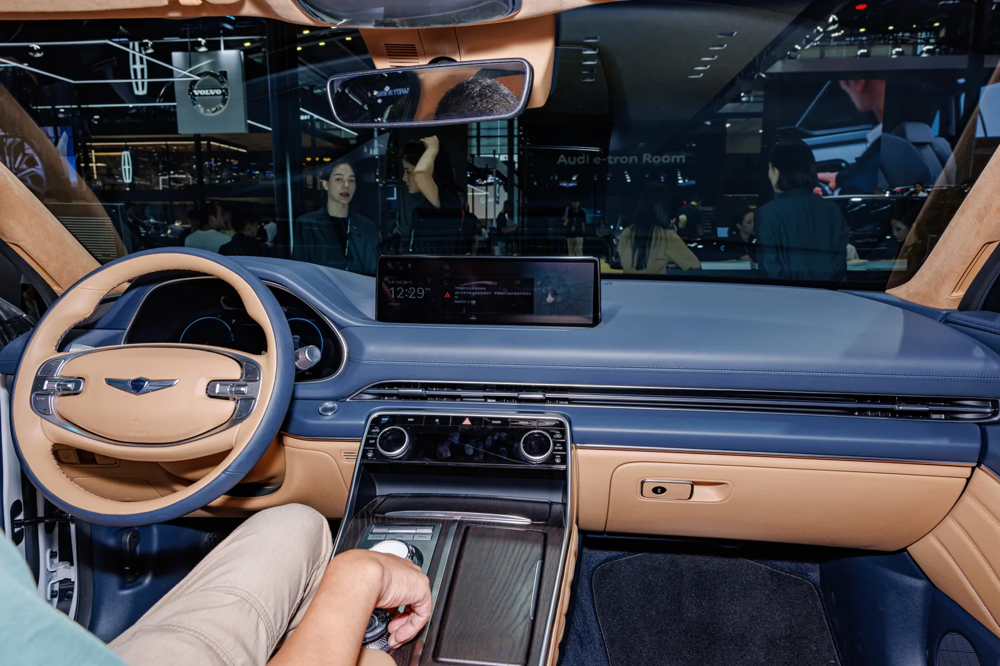
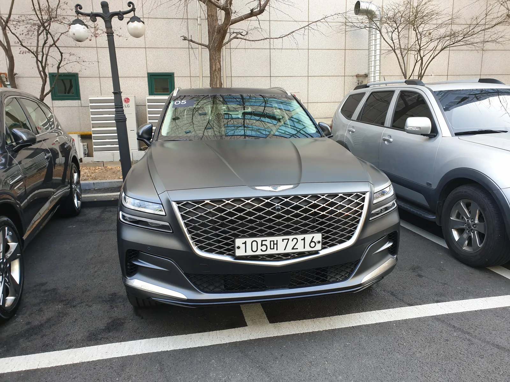

▲ 현행 가솔린 GV80. 2026년 9월 여기에 브랜드 최초의 하이브리드 파워트레인이 더해진다 ⓒ Wikimedia Commons
1. 제네시스 15년 만의 첫 하이브리드
제네시스가 브랜드 출범 이후 처음으로 하이브리드 파워트레인을 얹은 양산차를 내놓는다. 그 대상은 브랜드의 캐시카우인 대형 SUV GV80이다. 그동안 제네시스는 가솔린 터보와 전기차(GV60·G80 EV·GV70 EV) 두 축으로만 라인업을 꾸려왔는데, 그 사이를 메우는 하이브리드가 처음으로 등장하는 셈이다.
업계에 따르면 제네시스는 2026년 8월 새 하이브리드 시스템을 공개하고, 같은 해 9월 GV80 하이브리드를 정식 출시할 예정이다. 국내 SUV 시장에서 하이브리드 수요가 꾸준히 늘고 있는 만큼, GV80 하이브리드는 팰리세이드 하이브리드·쏘렌토 하이브리드 등 현대차그룹 내 형제 모델들과 함께 대형 SUV 하이브리드 격전을 벌일 것으로 보인다.

▲ 현행 GV80의 측면 실루엣. 하이브리드 모델도 차체 디자인은 크게 달라지지 않을 것으로 보인다 ⓒ Wikimedia Commons
2. 파워트레인: 2.5 터보 + P1·P2 병렬형 하이브리드
GV80 하이브리드의 핵심은 2.5 터보 가솔린 엔진에 P1(엔진과 변속기 사이)·P2(변속기 출력단) 두 개의 모터를 결합한 병렬형(Parallel) 하이브리드 구조다. 두 모터가 변속기 앞뒤로 나뉘어 배치되는 방식으로, 저속에서는 모터 단독 주행이 가능하고 고속·가속 구간에서는 엔진과 모터가 함께 개입해 응답성을 끌어올린다.
합산 최고출력은 352마력, 합산 최대토크는 54.0kgf·m로 전해진다. 이는 기존 3.5 터보 가솔린(380마력)에는 못 미치지만, 2.5 터보 단일 파워트레인(304마력) 대비로는 출력 약 16%, 토크 약 26% 향상된 수치다. 정지 상태에서 시속 100km까지 걸리는 시간은 약 7.1초로 추정된다. 배터리는 현대차그룹 최초로 수냉식 냉각 방식을 적용해 반복 가·감속 상황에서도 출력 저하를 최소화했다는 설명이다.
📍 왜 후륜구동 하이브리드가 어려운가
후륜구동 기반 대형 SUV는 변속기와 구동축 배치상 하이브리드 모터를 끼워 넣을 공간이 전륜구동 플랫폼보다 빠듯하다. 그동안 GV80에 하이브리드가 없었던 것도 이 때문으로 풀이된다. P1+P2 병렬형 구조는 이 제약을 우회하면서도 동력 손실을 줄이는 방식으로, 제네시스가 후륜구동 세단·SUV 전반에 하이브리드를 확대하기 위한 시험대 성격도 갖는다.
3. 연비와 예상 가격
공인 복합연비는 아직 정부 인증 전이지만, 기존 2.5 터보 대비 25% 이상 개선될 것이라는 전망이 나온다. 2.5 터보 GV80의 복합연비가 리터당 9km대 초반인 점을 고려하면, 하이브리드는 리터당 11~12km 안팎이 유력하다는 계산이 나온다. 앞서 나온 예측 중에는 복합연비 13.5km/L, 실주행 연비 15~16km/L에 이를 것이라는 보다 낙관적인 전망도 있어, 정확한 수치는 인증 결과를 지켜봐야 한다.
가격 역시 아직 공식 발표 전이다. 다만 업계에서는 기본 트림 기준 7,800만 원 안팎에서 시작해, 상위 트림과 옵션을 더하면 8,000만~9,000만 원대 중후반까지 올라갈 수 있다는 관측이 나온다. 하이브리드 시스템 추가에 따른 원가 상승분이 가솔린 대비 얼마나 반영될지가 최종 가격을 가르는 변수다.
| 구분 | 2.5 터보 | 3.5 터보 | 하이브리드(예상) |
|---|---|---|---|
| 최고출력 | 304마력 | 380마력 | 352마력 |
| 최대토크 | 42.8kgf·m | 54.0kgf·m | 54.0kgf·m |
| 구동방식 | 후륜/AWD | 후륜/AWD | 후륜 기반 |
| 복합연비 | 약 9km/L대 | 약 8km/L대 | 약 11~13km/L(추정) |

▲ GV80 실내(중국 사양). 하이브리드 모델도 대시보드·인포테인먼트 구성은 동일한 패밀리룩을 따를 전망이다 ⓒ Wikimedia Commons
4. 경쟁 구도: 대형 SUV 하이브리드 삼파전
GV80 하이브리드가 가세하면 국내 대형 SUV 하이브리드 시장은 한층 붐빌 전망이다. 현재 팰리세이드 하이브리드, 쏘렌토 하이브리드가 각각 3열 SUV 하이브리드 수요를 흡수하고 있는데, GV80 하이브리드는 이보다 상급인 럭셔리 대형 SUV 세그먼트에서 볼보 XC90 리차지, BMW X5 xDrive50e 등 수입 플러그인하이브리드 모델들과 직접 맞붙게 된다.
제네시스 입장에서는 순수 가솔린 구매층을 하이브리드로 자연스럽게 유도하는 동시에, 유류비에 민감한 법인·리스 수요까지 끌어올 수 있다는 점에서 GV80 하이브리드의 상품성이 중요하다.

▲ 국내에서 포착된 GV80. 하이브리드 모델도 우선은 기존 라디에이터 그릴·램프 디자인을 유지할 것으로 보인다 ⓒ Wikimedia Commons
✅ GV80 하이브리드, 이것만은 확인하자
· 공인 연비와 최종 가격은 정부 인증 완료 후 공개 예정
· 트림 구성(가솔린과 동일한 라인업일지) 미확정
· 3.5 터보 대비 출력은 낮지만 토크는 동일한 54.0kgf·m
· 배터리는 현대차그룹 최초 수냉식 적용
5. 남은 변수와 출시 일정
관건은 결국 정부 인증 연비와 최종 가격표다. 제네시스는 통상 신차 공개 후 짧게는 2~3주, 길게는 한 달 안팎의 시차를 두고 정식 가격을 발표해왔다. GV80 하이브리드 역시 9월 공개와 함께 사전계약이 먼저 시작되고, 정식 가격표는 계약 개시 직후 공개될 가능성이 크다. 트림 구성 역시 기존 가솔린 GV80(스탠다드·프레스티지·부메스터 패키지 등)과 동일하게 갈지, 하이브리드 전용 트림을 신설할지가 아직 확인되지 않았다.
6. 정리
제네시스가 2026년 9월 브랜드 최초의 하이브리드 SUV인 GV80 하이브리드를 출시한다. 2.5 터보와 P1·P2 모터를 결합한 병렬형 하이브리드로 합산 출력 352마력, 토크 54.0kgf·m를 낸다는 것이 지금까지 확인된 핵심 정보다. 복합연비는 기존 2.5 터보 대비 25% 이상 개선이 예상되지만, 정확한 인증 수치와 트림별 가격표는 아직 공식 발표되지 않았다. 대형 SUV 하이브리드 수요가 커지는 시점에 나오는 만큼, 정식 가격이 공개되는 9월 이후 시장 반응에 관심이 쏠린다.